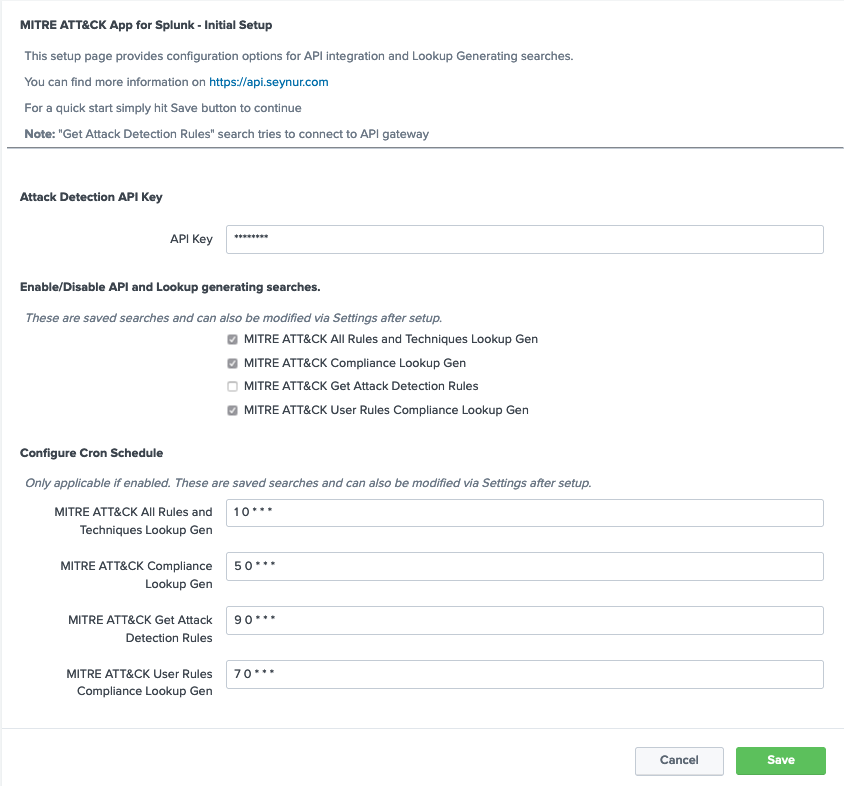
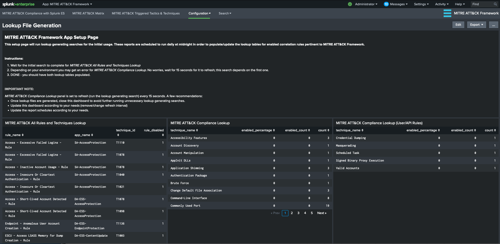
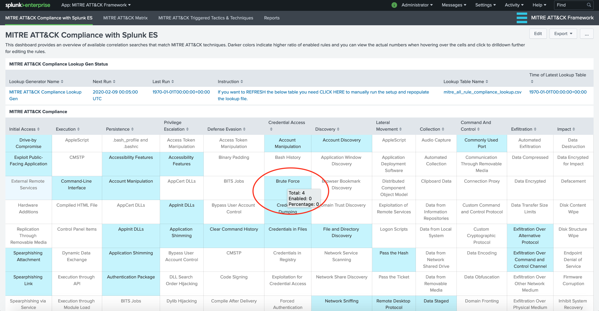

This version 2.2.0 is not the most recent version of documentation. Click here for the latest version.
MITRE ATT&CK App for Splunk® - Documentation
Download the latest AppInspect Passed version from: https://splunkbase.splunk.com/app/4617/
Please visit the Github repo for the latest changes and development efforts: https://github.com/seynur/DA-ESS-MitreContent/
Install the application on Splunk Enterprise. This application (DA-ESS-MitreContent) should be installed on the Search Head or Search Head Cluster where Enterprise Security Application resides. For details on add-on installation please refer to Splunk Documentation
Upon installation of the application you will be redirected to the Setup page.
This setup page provides configuration options for API integration. If you do not have an API key or prefer not to have the integration you can simply hit Save button and continue. You can always go back to this Setup page and overwrite the settings. Note that Setup also provides information on scheduled Lookup Generating searches and their schedules. These can also be edited from Settings.

After the initial setup you will be on Compliance Dashboard. If the matrix is not populated, click on the table row to run manually, which will direct you to the Lookup File Generation dashboard (searches run automatically on that dashboard). Click on the table row.

This dashboard will run lookup generating searches for the initial usage. These reports are scheduled to run daily at midnight in order to populate/update the lookup tables for enabled correlation rules pertinent to MITRE ATT&CK Framework.

Wait for the initial search to complete for MITRE ATT&CK All Rules and Techniques Lookup. Depending on your environment you may get an error for MITRE ATT&CK Compliance Lookup. No worries, wait for 15 seconds for it to refresh; this search depends on the first one.

Once the search is completed, you can go back to “MITRE ATT&CK Compliance with Splunk ES” dashboard to view the level of existing rules (enabled and available) in comparison to MITRE ATT&CK techniques. You can click on a specific technique in order to view the associated correlation rules within ES App.

MITRE ATT&CK Rule Finder view enables users to search for existing correlation rules based on technique names. You can click on the desired rule for further configuration.